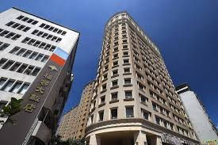

Saat edutrip di Taiwan, saya menginap di hotel yang bernama “Fullon hotel”.
Fullon hotel Shenkeng adalah salah satu hotel bintang lima yang terletak di kota Taipei.
Hotel ini berdiri sejak tahun 2010 dan memiliki sekitar lebih dari 300 kamar. Suasana di
sekitar Fullon Hotel Shenkeng selama edutrip di Taiwan terasa nyaman dan menyenangkan.
Hotelnya bersih, rapi, dan memiliki desain yang mewah, sehingga membuat saya nyaman selama menginap.
Hotel ini sering menjadi pilihan untuk para wisatawan karena memiliki banyak fasilitas yang cukup
lengkap dan juga lokasi yang cukup strategis.Selama saya menginap di hotel ini, saya merasa sangat
puas dengan pelayanan staf yang sangat ramah dan selalu siap membantu, sehingga saya merasa sangat
dihargai sebagai tamu. Ketika saya membutuhkan sesuatu, staf hotel selalu siap untuk membantu.
Kamar di Fullon hotel juga cukup luas dan bersih dengan fasilitas yang cukup lengkap seperti AC, TV,
yang berfungsi dengan baik dan dua tempat tidur yang cukup besar dan nyaman. Kamar mandi hotel juga
sudah dilengkapi dengan perlengkapan mandi seperti shampo, sabun, dan handuk. Lalu fasilitas hotel
sangat lengkap, terdapat kolam renang untuk bersantai, gym jika ingin berolahraga, dan juga restoran
yang menyediakan breakfast dengan berbagai jenis makanan lezat termasuk hidangan khas Taiwan.
Makanan yang disediakan oleh hotel enak dan bervariasi.Fullon hotel Shenkeng memiliki beberapa kelebihan
yang membuat pengalaman saya menginap menjadi nyaman karena semua kamar nya luas dan bersih, dilengkapi dengan
fasilitas yang cukup lengkap seperti AC, Televisi. Selain itu pelayanan hotel sangat ramah dan membantu. Hotel juga
menyediakan berbagai fasilitas seperti kolam renang, gym, restoran. Namun terdapat beberapa kekurangan karena pilihan
restoran di sekitar hotel tidak terlalu banyak dan lokasinya tidak terlalu dekat dengan stasiun MRT. Maka tamu harus
menggunakan taksi atau transportasi umum untuk mencapai pusat kota.Meskipun begitu, secara keseluruhan saya merasa senang
menginap di Fullon Hotel Shenkeng. Hotel Fullon Shenkeng tetap menjadi pilihan yang baik bagi wisatawan yang mencari hotel
nyaman dan memiliki fasilitas lengkap.
